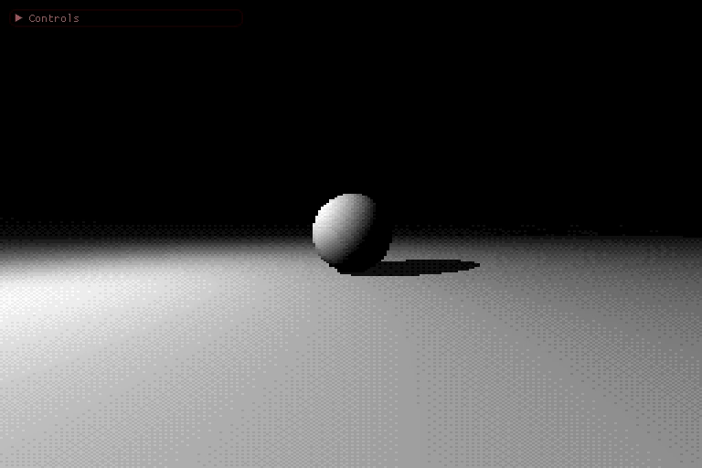

Dithered Raymarching, Part 1
This project is my first foray into raymarching/sphere tracing. I went through a video tutorial by the Art of Code youtube channel, called Raymarching for Dummies and implemented a very basic raymarch shader with two primitives, based on their approach. I liked the appearance of using nearest sampling and scaling the pixels up so that the pixels are individually 2 pixels tall and 3 pixels wide - this is a neat effect I've seen employed in quite a few indie games recently.
Why is it Dithered?
This came about in talking to someone about a small demo they had put together - they were raymarching signed distance fields with a low resolution in terms of pixel count, and then dithering with 16 colors to get their output. I really liked the look of it, and decided to implement my own project with similar intent. Once I got started, it occured to me that there is real benefit here in limiting the resolution going into the raymarching step - the reason being, as scene complexity increases, so too does the expense of distance queries, and more pixels means more rays to trace, each with potentially quite a few distance queries taking place in each. The dithering is an effect that I've wanted to understand for quite some time, and this was a good structure and opportunity to get into it.
My solution was to set up two compute shaders that operate on a 256x256 image texture, with rgba8ui content. This means that there are 8 bits, individually accessible in a trivial way, which identify the value in each of the color channels, per pixel. When raymarching in the first compute shader, I am using a more standard floating point approach, but then clamping the colors to the range 0-1 and multiplying by 255 to get the relevant 8 bit value stored in the image. There's a huge saturation of tutorials on how this works and I feel that at this point I do not yet know it well enough to give a good overview.
In the second compute shader, I am generating the palette of colors by doing an operation that I have seen used in audio much more than in images, called 'bitcrushing' - this is a form of quantizing into discrete levels, equivalently, a reduction of precision by only keeping the most significant bits - that is, the top few bits. In this case, 4 bits per channel are used - this is achieved by doing a bit shift right by 4 bits, then a bit shift left by 4 bits, though it might be more efficient to do binary AND with the bit mask 0b11110000. The low bits are not forgotten, however - they are used in the ordered dithering process, which I found described very well here (note that their palette is based on HSV lookups rather than my bitcrushing approach). The core concept is that since you have these 4 low bits to work with, with equivalent decimal values ranging between 0 and 15, you compare to a constant reference called an ordered dithering matrix in order to figure out whether you should bump the value up to the next color by adding 0xF to the color, or leave it as it was after truncating the bottom 4 bits.
I've included here a stripped down version of the compute shader that does the dithering:
#version 430 core
layout(local_size_x = 8, local_size_y = 8, local_size_z = 1) in; // workgroup size
layout( binding = 0, rgba8ui ) uniform uimage2D current;
// matrix from http://alex-charlton.com/posts/Dithering_on_the_GPU/
const uint indexMatrix4x4[16] = uint[]( 0, 8, 2, 10,
12, 4, 14, 6,
3, 11, 1, 9,
15, 7, 13, 5);
uint indexValue4()
{
int x = int(mod(gl_GlobalInvocationID.x, 4));
int y = int(mod(gl_GlobalInvocationID.y, 4));
return indexMatrix4x4[(x + y * 4)];
}
void main()
{
uvec4 h = imageLoad(current, ivec2(gl_GlobalInvocationID.xy));
uvec4 l = uvec4(255);
l.xyz = h.xyz & uvec3(0xFU); // low bits
h.xyz = (h.xyz>>4)<<4; // high bits
// get the red
l.r = (indexValue4() >= l.r) ? h.r : h.r + 0xFU;
// get the green
l.g = (indexValue4() >= l.g) ? h.g : h.g + 0xFU;
// get the blue
l.b = (indexValue4() >= l.b) ? h.b : h.b + 0xFU;
imageStore(current, ivec2(gl_GlobalInvocationID.xy), uvec4(l.rgb, h.a));
}
I've put together a very simple flowchart of what's going on in this program - the inputs are handed to the raymarch compute shader, which may eventually include an SSBO with geometry parameters, the output of which is then processed by the dithering shader, which is then passed along to the vertex/fragment shader pair represented here as the display shader. This display is doing the nearest sampling for all fragments on the screen - this involves covering the screen with two triangles, then doing a reference to the current image in the fragment shader. In so doing, the resolution of the raymarching step is completely independent of the resolution of the framebuffer, allowing me to still use dearImGui to facilitate runtime interaction.

Future Directions
This is just scratching the surface of the potential in raymarching. I will be digging into it further and seeing where I can go with it - stay tuned for Dithered Raymarching Part 2. I will be describing my further experiments with these concepts, as they are incredibly powerful.